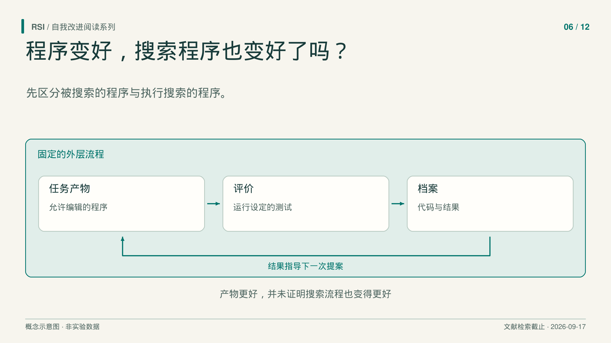
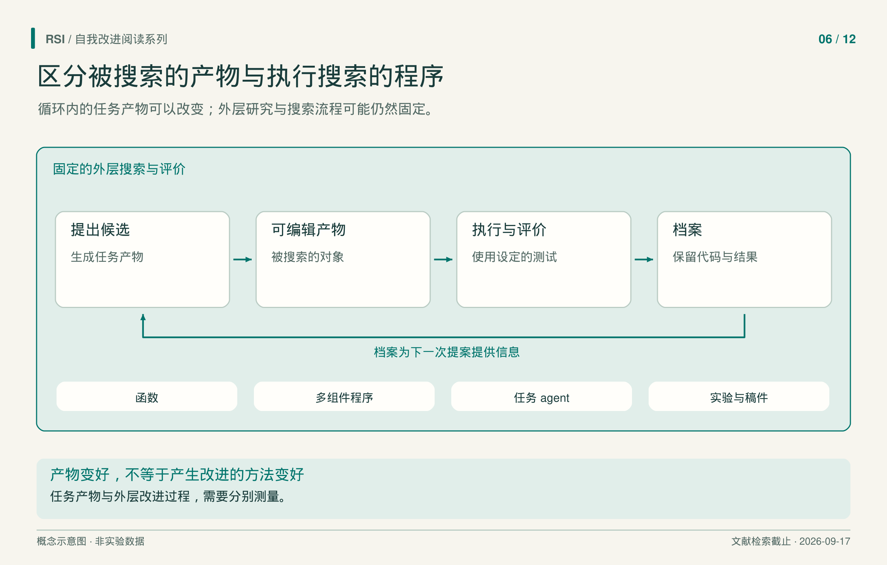

AI 系统可以发现算法、设计 agent，也可以产出研究论文。要判断这种改进发生在哪里，可以跟着产物进入下一次运行：系统复用了一个更好的解法，还是产生解法的方法也发生了变化？
即使产物本身是算法，这个区别仍然成立。搜索系统可以找到更好的排序程序，同时沿用完全相同的候选生成与筛选流程。任务解法变好了；关于搜索系统的结论，还需要另一项观察。
FunSearch、AlphaEvolve、ADAS 和 AI Scientist-v2 把这些边界展示得很具体。它们自动化了不同研究环节，也保留了不同的外层规则。

先给生成的代码一个可检验的工作
FunSearch 把提出程序和判断程序是否有用分开。冻结的 Codey 模型生成函数，执行器把函数放进给定程序骨架运行，再由人提供的评价函数检查是否合法、质量如何。报错、超出资源限制或产生无效结果的程序，可以在进入数据库前被筛掉。
程序骨架决定模型能改哪一个决策。在线装箱任务保留外部流程，让模型寻找给可用箱子评分的启发式；cap set 构造则演化候选元素的优先级函数。一个很小的可编辑函数，因而可以影响完整计算的结果。
数据库跨尝试保存程序和分数，并用多个“岛屿”保留不同程序路线。后续生成可以把成功程序作为上下文。积累的是任务解法与评价历史；Codey 权重不变，论文中的循环没有重写采样器、评价器或数据库维护算法。
这套办法依赖有用的反馈。若合法方案之间还能分出优劣，搜索就更容易识别渐进进展。作者据实验经验指出，高效评价器、丰富评分和可分离的程序组件，是适合这类搜索的条件。结果也伴随约百万量级的模型采样；发现质量应连同产生它的投入一起理解。
扩大可改程序，说明评价规范
AlphaEvolve 明确把 FunSearch 扩展到更复杂的程序。用户提供初始实现、标出可演化区域，并给出评价入口。模型组合提出修改，异步进化与数据库保存有用候选，多组件和多个指标都能进入搜索。
系统还可以在独立数据库里演化生成提示，所以“只改任务代码，所有提示都固定”也不准确。更合适的边界是：报告中的主控制器、基础模型权重和用户给定的评价要求，并没有随任务产物一起自主重写。
矩阵乘法结果说明了为什么必须说清指标单位。论文报告两个 4 × 4 矩阵乘积的秩 48 分解，对照值为 49；这里使用的是复数标量乘法。它不能改写成 48 次实数乘法，代数运算项数也不能直接转换成通用硬件上的运行时间收益。
执行结果可以直接检查某些约束，另一些标准可能依赖模型判断。把这些反馈放进一个循环，不会让它们自动具有相同可靠性。读者仍需要知道，哪些东西真正运行过，哪些经过模型评判，每个分数对应哪一项要求。

产物类型是比较案例。箭头表示搜索过程，不表示必经的历史路线，也不证明外层搜索会重写自身。
Agent 也可以是被搜索的产物
ADAS 搜索的是组织模型调用的程序。任务 agent 可以决定提示、传递中间结果、汇总候选答案。在 Meta Agent Search 中，固定的 meta agent 编写任务 agent 的 forward 函数，在验证题上评价，再把通过验证的设计和分数存入档案。
“Meta”首先说明设计者的角色，不能仅凭这个名字判断设计者是否改进自身。提出设计、修复错误、维护档案的流程仍然固定；可编辑对象是负责完成任务的程序。
这种区分与有用的任务结果可以同时成立。论文的 MGSM 域内搜索由 GPT-4 设计候选，GPT-3.5 执行候选。30 轮搜索后，选出的程序测试准确率为 53.4 ± 3.5%，表中的 LLM Debate 基线为 39.0 ± 3.4%；区间为 95% bootstrap 置信区间。它衡量搜索得到的任务程序，不是 GPT-4 直接答题的成绩，也没有单独测量设计者是否变得更会设计。
统一调用接口还不意味着每个程序每题使用相同调用数或 token。搜索花费与产物执行花费对应不同问题。如果用结果论证系统更高效，两部分都应该交代，而且应分别记录。
整个研究项目也可以成为产物
AI Scientist-v2 自动化的范围更大，包含想法、代码实验、调参、消融、图表和稿件。实验进度管理 agent 组织分阶段树搜索，节点保存计划、代码、执行结果与反馈，系统可以同时保留多条路线。
不同反馈各有用途。实际执行说明某次运行发生了什么；模型判断帮助选择节点或检查图表的可见问题；同行评审则从另一个层面评价被选中的稿件。任何一种信号都不能自动替代其他信号。
研讨会实验提交了三篇生成稿件，其中一篇获得 6、6、7 的评分，达到接受门槛，随后按预先约定撤回。人类先选初始想法，再从多个完整输出中选提交稿；被选定的单次运行内部没有人工编辑。
这些边界并不矛盾：运行内部可以自动完成，起点和最终提交仍有人类选择。因此，三篇筛选后提交稿中的一次成功，不是任意启动一次系统的成功概率。它也没有证明系统重写了研究管理程序，使下一代研究者更强。
如果要继续检验设计方法有没有进步，可以保存前后两个设计流程，在未参与原先搜索的问题上给它们可比预算，再评价各自产物。仅把最好产物带到新题上，测到的是产物转移；让两个流程重新产生候选，才开始检验设计能力。这个对照是根据上述区别提出的实验建议，不是这四项工作都已经完成的测量。
评价自动发现结果时，可以分别查看产物，以及负责产生下一项产物的程序。对具体任务而言，获得更好产物已经可能足够。若要讨论研究过程本身的改进，还需指出哪些流程改变了，并在明确条件下检验它能产生怎样的后继结果。
精选原始来源
FunSearch · AlphaEvolve · ADAS · AI Scientist-v2。
本文基于文献纳入截至 2026 年 9 月 17 日的书稿整理，结果对应书稿实际核对的版本，并非新一轮文献检索。